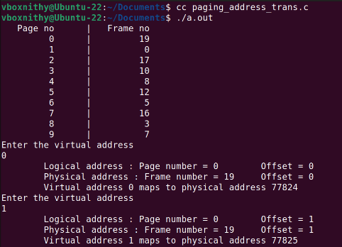
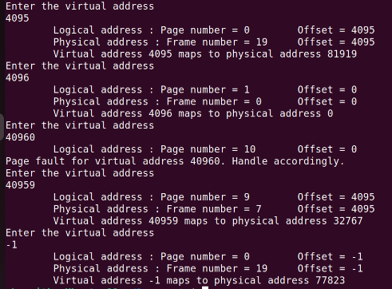

Hurray!!! You passed the quiz. Let's see the solution

Problem Statement :
Logical to physical address translation by computing page number and offset:
Assume that a system has a 16-bit virtual address with a 4-KB page size and a process of 10 pages. Write a C program that allocates the 10 pages of the process to the frames of the free_frames list given. Also, when a virtual address (in decimal) is passed, it should translate logical/virtual address to physical address for a simple paging scheme.
As an example, your program would run as follows:
For an input of 23851
Your program would output:
Logical address : Page number = 5 Offset = 3371
Physical address : Frame number = 12 Offset = 3371
Virtual address 23851 maps to physical address 52523
Solution :
#include < stdio.h >
#include < stdlib.h >
#include < sys/mman.h >
#define PAGE_SIZE 4096
#define PAGE_TABLE_SIZE 10 // Number of pages
#define NUM_FRAMES 20
int free_frames[NUM_FRAMES] = {14, 13, 18, 2, 15, 9, 6, 11, 4, 1, 7, 3, 16, 5, 12, 8, 10, 17, 0, 19};
int frame_use = NUM_FRAMES - 1;
typedef struct
{
int valid_bit;
int frame_number;
} PageTableEntry;
PageTableEntry page_table[PAGE_TABLE_SIZE];
void allocate_pages_in_frames()
{
// Simulate initializing page table by having random order of free frames
for (int i = 0; i < PAGE_TABLE_SIZE; ++i)
{
page_table[i].valid_bit = 1;
page_table[i].frame_number = free_frames[frame_use--];
}
}
void print_page_table()
{
printf("%10s \t| %10s\n", "Page no", "Frame no");
for (int i = 0; i < PAGE_TABLE_SIZE; ++i)
{
if (page_table[i].valid_bit == 1)
printf("%10d \t| %10d\n", i, page_table[i].frame_number);
}
}
void virtual_memory_access(int virtual_address)
{
// Extract page number and offset from the virtual address
int page_number = virtual_address / PAGE_SIZE;
int offset = virtual_address % PAGE_SIZE;
printf("\tLogical address : Page number = %d \t Offset = %d\n", page_number, offset);
// Check if the page is valid in the page table
if (page_number < PAGE_TABLE_SIZE && page_table[page_number].valid_bit)
{
// Access the data at the corresponding physical address
int physical_address = page_table[page_number].frame_number * PAGE_SIZE + offset;
printf("\tPhysical address : Frame number = %d \t Offset = %d\n",page_table[page_number].frame_number, offset);
printf("\tVirtual address %d maps to physical address %d\n", virtual_address, physical_address);
}
else
{
printf("Page fault for virtual address %d. Handle accordingly.\n", virtual_address);
}
}
int main()
{
allocate_pages_in_frames();
print_page_table();
// Get input of the virtual address, -1 to quit
int virt_add = 0;
do
{
printf("Enter the virtual address\n");
scanf("%d", &virt_add);
virtual_memory_access(virt_add);
}while(virt_add != -1);
}
Sample Output :
 